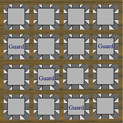
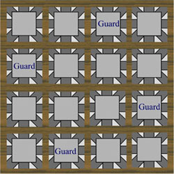

Problem J
Place the Guards
Input: Standard Input
Output: Standard Output
The king of Amazing Land has a secret place where he keeps his treasure. No one knows what is the size of that place. Some say that it is (4 * 4) and some others say that it is (1000 * 1000). The rooms in this secret place are also square shaped and of unit length and width. So a (4 * 4) place has 16 rooms as shown in the pictures below. So a (n * n) place has n^2 or (n * n) rooms. n guards are used to look after the (n * n) sized secret place. In the picture below each second largest square denotes a room. The gray square inside each room indicates free space where the guards stand. The outgoing tunnels (dark gray in color) from the free space denote the tunnels to go into and out of the rooms. As you can see that the tunnels are designed in such a way that only the guards on the same row, same column and same diagonal can see each other. If we use (row, column) denoting scheme we can say that in figure 1 guard (2, 1) can see guard (3, 2) and guard (3,2) can see guard (4, 3). Although guard (2,1) and guard (4, 3) are in the same diagonal they cannot see each other as guard (3, 2) stands between them. For obvious reasons guard (2, 1) can see guard (2, 4) but guard (3, 2) cannot see guard (2, 4). The King always places his guards in such a way that no guard can see any other guard. In the empty rooms (where there is no guard) he keeps his treasure. The King arranges his guards in this way because he thinks when a guard sees another guard they start gossiping and thus lose concentration. You are to help the King to place his guards.
|
 |
 |
Fig 1:
Invalid Guard Layout Fig 2: Valid Guard
Layout
Input
File will contain an integer in each line, which indicates the value of n (The
length or width of one side of the secret place). Remember that (1<n<1001). Input
is terminated by End of File.
Output
As it is obvious that only one guard can be placed in
each column. For each input value of n you will have to print a line of n
integers. The integers will be separated by a single space. These
integers denote the row positions of guards in each column. For the valid
configuration of guards in figure 2 you will print the line 2 4 1 3 as
in column 1 the guard is placed on row 2, in column 2 the guard is placed on
row 4 and so on. There can be multiple solutions. Any good solution will be
accepted. If guards cannot be placed in the secret place print the line
“Impossible” in a single line.
Sample Input
4Sample Output
2 4 1 3__________________________________________________________________________________________
Shahriar Manzoor
"God grant me the serenity
To accept the problems that I cannot solve
The persistence to solve the problems that I can
And the wisdom to know the difference."